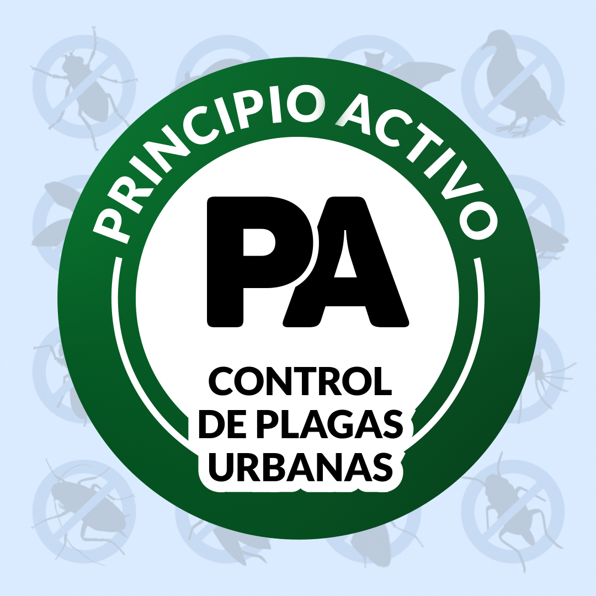
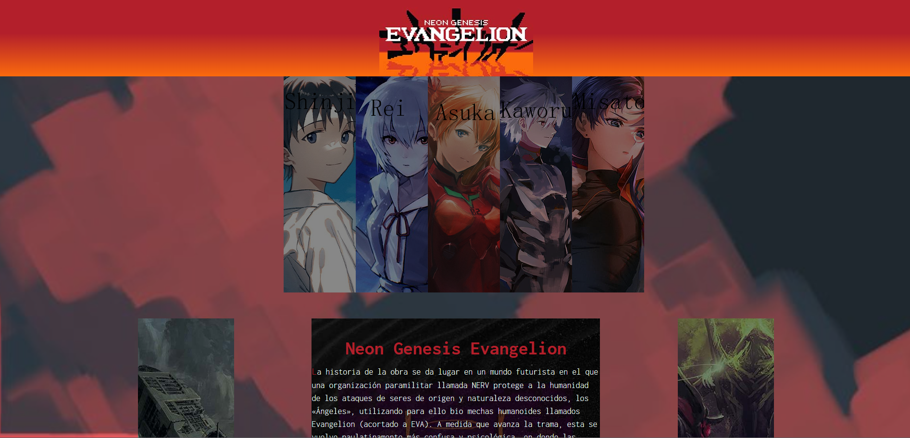
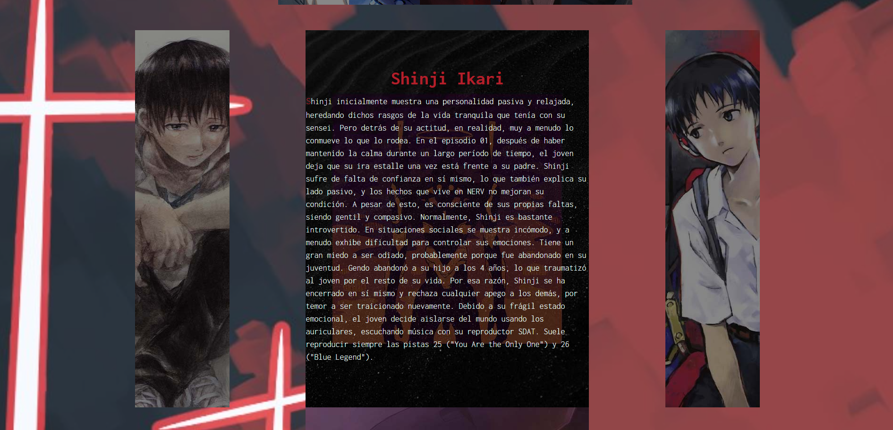
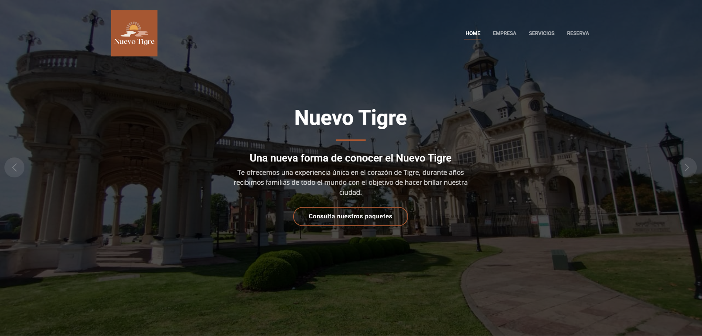
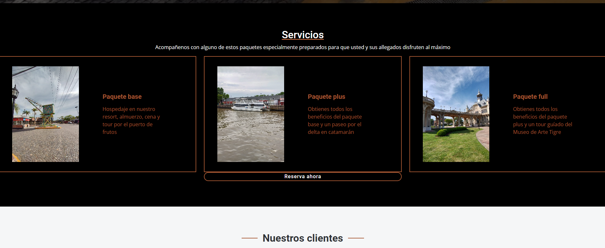

Perfil
Soy un desarrollador web y de software junior de 23 años, actualmente estoy estudiando en la UADE desarrollo de software. Estoy conociendo este campo de trabajo, tengo muchas ganas de aprender de mis pares y de los desafios que pueda llegar a afrontar. Considero al inglés mi segundo idioma, siendo capaz de manejar conversaciones fluídas con extranjeros e interpretar textos sin dificultad alguna, lo cual es increiblemente útil en este ambito laboral también cuento con un buen manejo del paquete Office de Microsoft, permitiendome manejarme en ambitos administrativos. Si debería indicar algún tipo de debilidad, es que el trabajo en equipo no es algo que se me dé naturalmente, sin embargo, tengo ganas de superar estas dificultades.
Experiencias
- Trabajé entre 2018 y 2020 en Principio Activo, donde tenía que hacerme cargo tanto de la parte administrativa, como del trabajo de operario, trabajando en la zona de Salto, Buenos aires. Fue una gran experiencia debido a que debí aprender a gestionarme yo solo y considero debido a esto puede ser útil en este nuevo campo de trabajo 
- Durante 2022 estuve trabajando como barman en Music Room, bar-restaurant caracterizado por ser el único bar de rock en toda la ciudad, allí aprendí a trabajar bajo presión, por la caracteristíca intensidad del rubro gastronomíco, mantener la calma durante situaciones de estrés, es algo que sirve en cualquier tipo de trabajo.
Educación
- El primer cuatrimestre de 2022 tomé un curso de desarrollo web Coderhouse donde a lo largo del mismo fuimos desarrollando una página, esta fue mi introducción a este mundillo y valoro mucho lo aprendido allí
- Actualmente me encuentro cursando Desarrollo de Software en la UADE, con los conocimientos adquiridos en este cuatrimestre me siento con la suficiente confianza como para enfrentar el mundo laboral. Idealmente me recibiría en 2025 y espero seguir incorporando conocimientos a medida que pasa el tiempo


Sitios realizadas
Evangelion
Sitio creado de forma individual para Coderhouse, la idea era hacer una fanpage que tuviera un poco de información de cada personaje del ánime Evangelion, fue un proyecto impulsado por la pasión y mi primera experiencia con el desarrollo web. Considero que hay muchas cosas en la que se podría mejorar, pero en lineas generales me siento satisfecho con cómo resultó
Siento que me concentré demasiado en la parte estetíca de la página, dejando de lado las partes más relacionadas a la calidad y cantidad de contenido como ya mencioné antes, eso ignorando que su valor es puramente lúdico puesto que no cumple ninguna función especifica más que informar sobre la sinopsis y los personajes del anime
Te invito a que pases a mirar el sitio haciendo click aquí
Nuevo Tigre
Sitio creado de forma grupal para el segundo parcial de Diseño y Desarrollo Web de la UADE, fue mi primera experiencia trabajando en equipo y si bien hubo errores de mi parte, ahora mismo me siento más cómodo enfrentando un grupo de trabajo para diseño web. Individualmente me encargué de hacer la home del sitio, utilizamos una plantilla de bootstrap y editamos su contenido para cumplir con nuestras necesidades.
El trabajo que nos pidieron cumplir era básicamente crear un sitio de turismo, utilizando nuestros propios assets para no infringir problemas de copyright, decidimos hacer diferentes paquetes de viaje hipotetícos a traves de Tigre, puesto que es un foco turistíco y uno de mis compañeros vivía cerca como para tomar las fotos y la información necesarias. Quedé satisfecho con el trabajo del grupo en general y con el mío individualmente, sin embargo, no me termina de gustar la idea de usar plantillas de bootstrap, pero al fin y al cabo es una experiencia sumamente útil.
Te invito a visitar el sitio haciendo click aquí